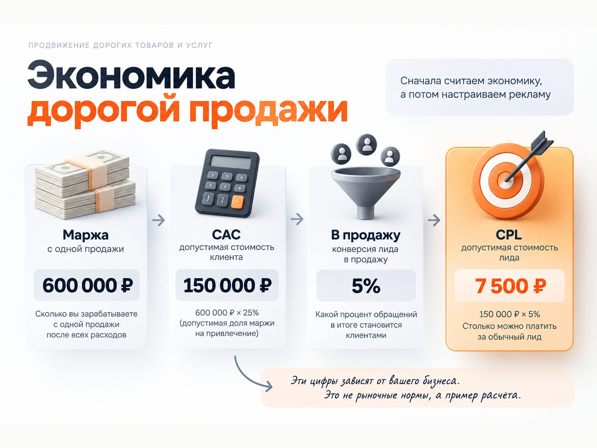

Блог о платном трафике
Продвижение дорогих товаров и услуг
Продвижение дорогих товаров и услуг отличается от массового рынка не столько рекламными каналами, сколько всей логикой воронки. Потенциальных покупателей мало, решение принимается дольше, ошибка в позиционировании обходится дорого, а обычная заявка ещё практически ничего не говорит о результате.
Поэтому здесь опасно ставить главной целью дешёвый лид. Реклама может приводить много обращений по привлекательной цене, но большинство из них окажутся людьми без нужного бюджета. И наоборот, заявка за 30 000-60 000 ₽ может быть экономически выгодной, если продукт стоит несколько миллионов и хорошо конвертируется в продажи.
Свежие российские кейсы 2026 года это хорошо показывают: в премиальном туризме, недвижимости и luxury e-commerce результат получали не за счёт одного точного таргетинга на «богатых», а через связку позиционирования, сегментации, качественной посадочной страницы, повторных касаний и аналитики до продажи.
Почему дорогой продукт нельзя рекламировать как массовый
У премиального товара или услуги обычно одновременно возникают несколько проблем.
Первая - небольшая целевая аудитория. Если квартира стоит 40 млн ₽, тур 3 млн ₽ или услуга несколько миллионов, большая часть пользователей автоматически не подходит по бюджету.
Вторая - по поисковому запросу не всегда можно понять платежеспособность человека. Пользователь, который хочет дорогую мебель, может искать просто «кухня на заказ» или «постельное бельё». В свежем кейсе luxury-магазина товары стоимостью 11 000-40 000 ₽ искали по тем же общим запросам, что и более дешёвые аналоги. Поэтому отделить подходящего клиента только на уровне ключевой фразы сложно.
Третья проблема - длинный выбор. Чем выше цена и риск покупки, тем чаще человек возвращается на сайт, изучает компанию, сравнивает предложения, читает отзывы, смотрит кейсы и только потом связывается с продавцом.
Четвёртая - цена ошибки выше. Плохой сайт или слабая обработка заявки способны обнулить даже качественный трафик. В кейсе элитного ЖК после пересборки предложения и сайта конверсия в заявку выросла с 0,2% до 0,8%, а количество целевых обращений - с 70 до 95. Стоимость квартиры начиналась примерно от 34,85 млн ₽.
Поэтому продвижение премиального продукта нужно рассматривать как единую систему:
реклама -> сайт -> квалификация -> консультация или встреча -> продажа -> повторные касания.
Оптимизировать только первый участок этой цепочки недостаточно.
Что показывают свежие кейсы премиального сегмента
Универсального «среднего CPL для дорогих товаров и услуг» не существует. Слишком сильно различаются чек, маржинальность, география, конкуренция и способ продажи.
Но свежие кейсы хорошо показывают масштаб разброса.
В кейсе элитного туроператора средняя стоимость тура составляла 2-3 млн ₽. В одной из охватных кампаний было потрачено около 5 млн ₽, получено 80 заявок и 7 продаж на 110 млн ₽. Из опубликованных цифр получается примерно 62 500 ₽ за обращение, около 714 000 ₽ рекламных расходов на продажу, конверсия заявки в продажу 8,75% и ДРР около 4,5%. Для обычной услуги CPL 62 500 ₽ выглядел бы катастрофически, а здесь экономика выдерживала такую цену.
В другом свежем кейсе элитной недвижимости после изменения продукта, сайта и сегментации аудитории стоимость заявки составляла 28 102 ₽. При этом конверсия страницы выросла в четыре раза. Сам рекламный кабинет не был главным изменением - сначала пришлось исправлять предложение и его упаковку.
В luxury e-commerce ситуация другая. В кейсе магазина постельного белья выяснилось, что около 70% покупателей не совершали покупку сразу. Ретаргетинг на заинтересованных пользователей стал важной частью воронки, а месячная выручка проекта в итоге выросла с 1,5 до 3 млн ₽.
Для дополнительной проверки полной воронки можно взять кейс элитной недвижимости Москвы 2025 года. При бюджете 1,5 млн ₽ за три месяца было получено 333 обращения, 60 показов объектов и 3 сделки. CPL составлял около 4 505 ₽, но пересчёт до продажи даёт уже примерно 500 000 ₽ рекламных расходов на одну сделку. Конверсия обращения в продажу - около 0,9%.
Именно поэтому сравнение двух проектов только по CPL почти бесполезно. Нужно понимать, что произошло с заявкой дальше.
Сначала посчитайте допустимый CAC и только потом CPL
Для дорогого продукта прогноз лучше строить от продажи назад.
Базовая формула:
допустимый CAC = маржа с продажи × допустимая доля маржи на привлечение клиента
После этого можно рассчитать допустимую цену обращения:
допустимый CPL = допустимый CAC × конверсия лида в продажу
Допустим, продукт приносит 600 000 ₽ маржи с одной продажи. Компания готова тратить на привлечение клиента не более 25% этой суммы.
Допустимый CAC:
600 000 × 25% = 150 000 ₽
Если в продажу превращаются 5% обычных обращений:
150 000 × 5% = 7 500 ₽
Получается, что при такой экономике можно платить до 7 500 ₽ за обычный лид.
Предположим также, что квалификацию проходят 40% обращений. Из 20 обычных лидов получится 8 квалифицированных, а одна продажа будет приходиться примерно на 8 квалифицированных обращений. Допустимая стоимость квалифицированного лида тогда составляет:
150 000 / 8 = 18 750 ₽
Это не рыночные нормы. Это пример расчёта экономики конкретного бизнеса.

Такой подход полезнее вопроса «сколько обычно стоит заявка в премиум-сегменте», потому что даже лид за 20 000 ₽ может быть дешёвым для одного бизнеса и совершенно нерентабельным для другого.
Как должна выглядеть воронка дорогого продукта
Попытка сразу продать товар или услугу на несколько миллионов холодному человеку часто создаёт слишком большой первый шаг.
Для дорогой услуги рабочая воронка может выглядеть так:
- Реклама или экспертный контент.
- Посадочная страница под конкретный сегмент.
- Расчёт, подбор, консультация или другой промежуточный шаг.
- Квалификация клиента.
- Личная консультация, встреча, показ или презентация.
- Коммерческое предложение.
- Продажа.
- Возврат тех, кто пока не принял решение.
Для дорогого товара логика немного меняется:
реклама -> карточка или подборка -> изучение товара -> ретаргетинг -> консультация или шоурум -> покупка.
Иногда человек сразу готов оформить заказ. Но чем выше чек и сложнее продукт, тем важнее промежуточные касания.
Вместо формальной кнопки «Оставить заявку» можно предложить подбор решения, персональную консультацию, расчёт проекта, запись на просмотр, индивидуальную презентацию, каталог коллекции или обсуждение задачи с экспертом.
Задача такого шага - не собрать максимум телефонов, а перевести заинтересованного человека на следующий логичный этап.
Сайт должен подтверждать высокую цену
Реклама не сможет долго компенсировать несоответствие между ценой продукта и тем, как выглядит компания.
Если продаётся недвижимость за десятки миллионов, дорогой интерьер, частная медицина, премиальное путешествие или сложная B2B-услуга, сайт должен объяснять, почему предложение стоит именно столько.
Нужны не абстрактные слова «VIP», «эксклюзивный» и «премиальный», а доказательства:
- конкретные характеристики продукта;
- реальные кейсы и проекты;
- фотографии и видео;
- процесс работы;
- специалисты;
- гарантии и ответственность;
- условия обслуживания;
- отзывы;
- понятная причина высокой стоимости;
- преимущества, которые невозможно получить у массового предложения.
В элитной недвижимости свежий кейс показал, что переход от общих премиальных формулировок к конкретным преимуществам, планировкам, ценам и разным предложениям под разные мотивы покупателей сопровождался ростом конверсии страницы с 0,2% до 0,8%.
Скрывать цену тоже не всегда полезно. Если точную стоимость назвать невозможно, можно обозначить минимальный бюджет, диапазон или показать реальные примеры проектов. Это одновременно объясняет позиционирование и отсекает часть неподходящих обращений.
Форма заявки тоже может выполнять функцию фильтра. Для дорогих товаров и услуг иногда имеет смысл спросить примерный бюджет, задачу, срок реализации или другой параметр квалификации.
Количество лидов после этого может снизиться, но бизнесу важнее не максимум заполненных форм, а количество клиентов, которые действительно могут купить.
Подробнее эта проблема разобрана в материале про нецелевые и некачественные лиды из Яндекс Директа.
Как запускать Яндекс Директ для дорогих товаров и услуг
Яндекс Директ подходит для премиального сегмента, но структуру рекламы нужно строить вокруг характера спроса.
Поиск
Если человек уже знает, что хочет купить, поиск обычно должен стать первым каналом тестирования.
Полезно разделять:
- прямые коммерческие запросы;
- запросы по конкретным категориям;
- запросы по проблеме или задаче;
- географические запросы;
- брендовый спрос;
- смежные сформированные запросы.
Не нужно рассчитывать только на слова «премиум», «элитный», «дорогой» или «VIP». Обеспеченный покупатель вполне может использовать обычный категорийный запрос.
Поэтому фильтрация продолжается уже в объявлении и на сайте. Цена, минимальный бюджет, география, формат работы и особенности продукта помогают сразу уменьшить количество случайных переходов.
РСЯ и работа со скрытым спросом
В некоторых дорогих нишах прямых запросов мало. Потенциальный покупатель существует, но ещё не сформулировал потребность в поиске.
В РСЯ можно использовать краткосрочные интересы и привычки. Яндекс определяет их по поисковому поведению, посещённым сайтам и приложениям, а также другим поведенческим сигналам. Эти условия можно использовать самостоятельно или сочетать с ключевыми фразами.
Но здесь особенно опасна попытка просто «найти богатых». Лучше тестировать аудитории, связанные с реальным продуктом, поведением и мотивом покупки, а затем смотреть качество полученных клиентов.
Ретаргетинг
Для длинного выбора ретаргетинг практически становится отдельным этапом воронки.
Можно возвращать:
- посетителей важных страниц;
- людей, изучивших несколько товаров;
- пользователей, начавших заполнять форму;
- посетителей страницы стоимости;
- тех, кто положил товар в корзину;
- пользователей, просмотревших конкретную категорию или объект.
Для товаров, автомобилей, недвижимости, услуг и каталогов Яндекс также поддерживает офферный ретаргетинг, который позволяет повторно показывать просмотренные предложения и связанные с ними варианты.
Свежий кейс премиального интернет-магазина подтверждает саму механику: значительная доля покупателей принимала решение не сразу, а ретаргетинг стал одним из ключевых инструментов возврата потенциальных клиентов.
Автоматические стратегии
Главная сложность дорогих ниш - мало конечных продаж.
Если выбирать в качестве единственной цели продажу продукта за несколько миллионов, алгоритм может получать слишком мало данных.
Поэтому иногда полезно передавать в систему несколько этапов воронки: обычную заявку, квалифицированное обращение, запись на встречу и конечную продажу, задавая им разную ценность.
Яндекс прямо допускает оптимизацию по нескольким целям в одной воронке, включая промежуточные действия и офлайн-конверсию. Дополнительные сигналы помогают алгоритму понять, какие действия действительно ведут к конечному результату.
При этом нельзя автоматически включать оплату за конверсии только потому, что продукт дорогой. Стратегии требуется статистика. Точность прогнозирования зависит от количества накопленных данных.
Если продаж и квалифицированных лидов мало, лучше не раздроблять небольшой объём данных между десятками отдельных кампаний и целей.
Какие каналы использовать кроме Яндекс Директа
Высокий чек редко продаётся одним каналом.
Яндекс Директ обычно закрывает сформированный спрос и помогает находить дополнительную аудиторию. Но рядом с ним могут работать:
- SEO и экспертные статьи;
- кейсы;
- отзывы и репутационные площадки;
- видеоконтент;
- ретаргетинг;
- CRM-рассылки и мессенджеры;
- профильные медиа;
- блогеры и лидеры мнений;
- партнёрская сеть;
- офлайн-мероприятия;
- персональная работа менеджеров.
Выбор зависит от продукта.
Для дорогого B2B основой могут стать экспертный контент, поиск и персональная работа с потенциальными клиентами. Для элитной недвижимости - поиск, сети, ретаргетинг, брендовые и медийные форматы. Для luxury e-commerce - товарная реклама, РСЯ, ретаргетинг и CRM.
Не нужно запускать все каналы одновременно. Сначала стоит понять, где возникает спрос и какую часть воронки должен закрывать каждый источник.
Аналитика должна доходить до продажи
В дорогом сегменте обычной цели «форма отправлена» недостаточно.
Минимальный набор показателей:
- количество обычных лидов;
- CPL;
- доля квалифицированных лидов;
- стоимость квалифицированного лида;
- количество консультаций, встреч или показов;
- конверсия квалифицированного лида в продажу;
- количество продаж;
- CAC;
- выручка;
- маржа;
- ДРР или ROMI;
- продолжительность сделки.
Если CRM позволяет классифицировать лиды, эти данные желательно возвращать обратно в рекламную систему.
Это особенно важно в недвижимости, B2B, строительстве, медицине и других направлениях, где два одинаковых по цене лида могут иметь совершенно разную ценность. Подробнее - в материале про офлайн-конверсии и передачу данных из CRM в Яндекс Директ.
Метрика также позволяет создавать цели разных уровней и использовать данные о поведении аудитории для оптимизации рекламы.
В итоге рекламный отчёт должен отвечать не на вопрос «сколько заявок получили?», а на вопрос «какие рекламные источники в итоге приводят подходящих клиентов и продажи?».
Как прогнозировать рекламный бюджет
Для всех дорогих товаров и услуг нельзя назвать одну минимальную сумму.
Правильная последовательность такая:
- Определить маржу с одной продажи.
- Рассчитать допустимый CAC.
- Определить реальную или прогнозную конверсию лида в продажу.
- Рассчитать допустимый CPL.
- Определить, сколько лидов нужно получить для теста.
- Умножить это количество на допустимый CPL.
Например, если вы хотите проверить гипотезу на 20 обращениях:
| Допустимый CPL | Бюджет на 20 лидов |
|---|---|
| 5 000 ₽ | 100 000 ₽ |
| 10 000 ₽ | 200 000 ₽ |
| 25 000 ₽ | 500 000 ₽ |
| 50 000 ₽ | 1 000 000 ₽ |
Это арифметика, а не прогноз рынка.
Если бизнес может позволить себе только 100 000 ₽, а расчётная допустимая цена обращения составляет 25 000 ₽, бюджет позволяет получить примерно четыре лида. По четырём обращениям сложно делать надёжный вывод о качестве всей рекламной модели.
Поэтому для дорогих продуктов вопрос бюджета особенно важен: небольшой тест формально запустить можно, но данных для принятия решения может оказаться недостаточно.
Для оценки поискового спроса и стоимости трафика отдельно можно использовать прогноз бюджета Яндекс Директа, а затем уже накладывать на него собственную конверсию сайта и воронки.
Когда дешёвый лид становится плохим результатом
Представим две рекламные кампании.
Первая приводит заявки по 3 000 ₽, но только 10% проходят квалификацию.
Вторая приводит заявки по 8 000 ₽, но квалификацию проходят 60%.
В первой кампании квалифицированный лид фактически обходится в:
3 000 / 10% = 30 000 ₽
Во второй:
8 000 / 60% ≈ 13 333 ₽
По отчёту Яндекс Директа первая кампания выглядит значительно дешевле. Для бизнеса вторая почти в 2,3 раза выгоднее уже на следующем этапе воронки.
Поэтому снижение CPL без контроля качества способно даже ухудшить результат.
Для дорогих товаров и услуг правильнее последовательно смотреть:
CPL -> квалификация -> встреча -> продажа -> CAC
И только после этого решать, какой источник действительно эффективнее.
Основные ошибки при продвижении премиального сегмента
- Пытаться найти одну настройку «показывать только богатым». Платежеспособность лучше определять комбинацией спроса, поведения, продукта, сайта и дальнейшей квалификации.
- Оптимизироваться на самые дешёвые заявки. Алгоритм может научиться находить людей, которым проще оставить форму, но которые никогда не купят продукт.
- Вести дорогой трафик на дешёво выглядящий сайт. В премиальном сегменте оформление, контент и сервис являются частью самого предложения.
- Скрывать всю информацию и надеяться, что менеджер объяснит ценность по телефону. Человек ещё до разговора должен понимать, почему стоит продолжать общение.
- Ждать продажи после одного касания. Для дорогого решения часто нужны повторные визиты и возврат аудитории.
- Оценивать результат через две недели, если реальный цикл сделки занимает несколько месяцев.
- Не передавать качество лидов из CRM. В этом случае рекламная система получает одинаковый сигнал от хорошей заявки и от человека, которому продукт не по карману.
- Дробить небольшой объём данных между большим количеством кампаний. Для узкой аудитории это мешает накоплению статистики.
Пошаговый план продвижения дорогого товара или услуги
Начинать стоит не с рекламного кабинета.
- Сначала посчитайте маржу, допустимый CAC и цену квалифицированного обращения.
- Затем разделите потенциальных клиентов не только по полу и возрасту, а по мотивам покупки. Для одного важен статус, для другого - индивидуальный сервис, для третьего - инвестиционная ценность, экономия времени, безопасность или экспертность.
- Под основные сегменты подготовьте отдельные предложения и посадочные страницы. На сайте заранее покажите уровень продукта, доказательства, процесс работы и ценовой диапазон.
- После этого настройте Метрику, коллтрекинг и CRM. Отдельно фиксируйте обычные и квалифицированные обращения.
- На первом этапе Яндекс Директа закройте сформированный поисковый спрос. Затем тестируйте автоматический таргетинг, РСЯ и другие аудитории, если прямого спроса недостаточно.
- Одновременно собирайте сегменты посетителей и запускайте ретаргетинг. Для дорогого продукта человек, который уже несколько раз изучал предложение, зачастую ценнее нового холодного посетителя.
- После накопления статистики оценивайте не самый дешёвый CPL, а всю цепочку до продажи.
- И только после этого масштабируйте кампании, которые дают приемлемый CAC.
Главное правило продвижения дорогих товаров и услуг простое: высокая цена продукта позволяет платить за клиента больше, но не позволяет тратить деньги вслепую. Чем уже аудитория и выше чек, тем важнее сайт, квалификация, аналитика и связь рекламы с реальными продажами.